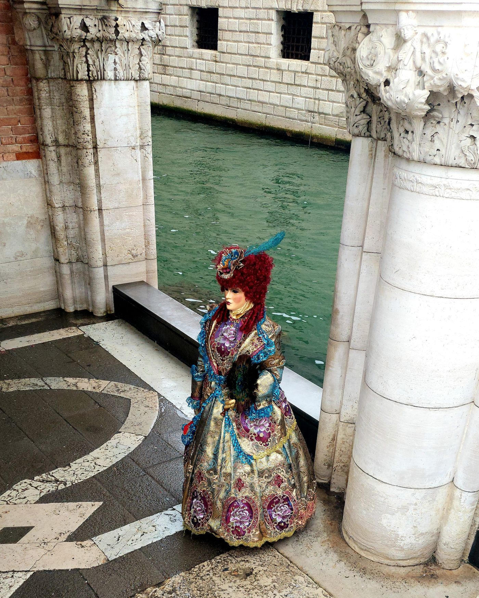

Commissione Nº 1 — 2025
A Beak for the Graveyard Scene
The askAn opera company in Verona, staging Don Giovanni, wanted Death in the graveyard scene dressed as a plague doctor. The medico had to read at thirty metres, weigh little enough for a singer doubling two roles, and survive a full run under stage lights.
The makingThe beak was modelled two centimetres shorter than my shelf medico so the singer kept his sightline to the conductor. Three layers of paper instead of four, a light rib inside the beak, and the patina taken darker so it would not flare white under a follow-spot.
The outcomeIt ran fourteen performances in Verona. Then the company ordered a second, identical, for the touring cast — the only commission I have ever repeated without changing a single line.
- Form
- Medico della peste, stage weight 310 g
- Price
- €225 — medico €190 + patina €35, from the bench table
- Delivered
- October 2025, Verona
“Alvise shortened the beak by two centimetres and the singer could suddenly see the conductor. Nobody in the third balcony noticed. Everybody backstage did.” Chiara Bellini, costume designer for the production